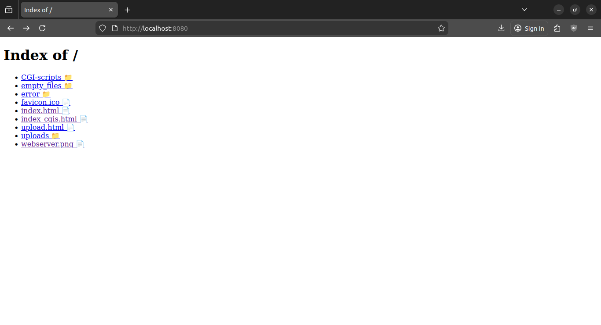

Webserv
Recréation d'un serveur HTTP inspiré de NGINX, réalisé en C++ dans le cadre de 42.

Langage : C++
Technologies : sockets, HTTP, poll()
Projet : 42
Repository : https://github.com/ma-gabriel/HTTP-server
Le projet
L'objectif était de développer un serveur HTTP capable d'accepter plusieurs connexions et de traiter des requêtes HTTP de manière similaire à un serveur web classique.
Le projet m'a notamment permis de travailler avec les sockets, la gestion des connexions, les entrées/sorties multiplexées ainsi que le fonctionnement du protocole HTTP.
Ce que j'ai appris
Ce projet m'a permis de mieux comprendre ce qui se passe derrière un serveur web et la manière dont plusieurs connexions peuvent être gérées simultanément.
← Retour aux projets